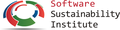

Partnering with the SSI

We are very pleased to announce that the Software Sustainability Institute has agreed to coordinate Software Carpentry activities in the UK. The SSI became involved in Software Carpentry in 2011 when they started developing online lectures for us on advanced shell techniques and file management in Python. In April 2012, they participated in the first general UK bootcamp at University College London; a fortnight later, in conjunction with the Digital Institute at Newcastle University and SoundSoftware, they delivered the first bootcamp to be run entirely by UK tutors. They have since delivered the majority of bootcamps run in the UK and been instrumental in helping us grow in Europe.
In their new role, the SSI will help UK researchers organise bootcamps for their research groups, institutions and communities; help the local organisers of bootcamps create and customize content; attract instructors and helpers; manage registration; advise on publicity; and provide support in all aspects of organising a bootcamp. If you'd like help organising a bootcamp, or if you're interested in becoming an instructor or helper, please get in touch.